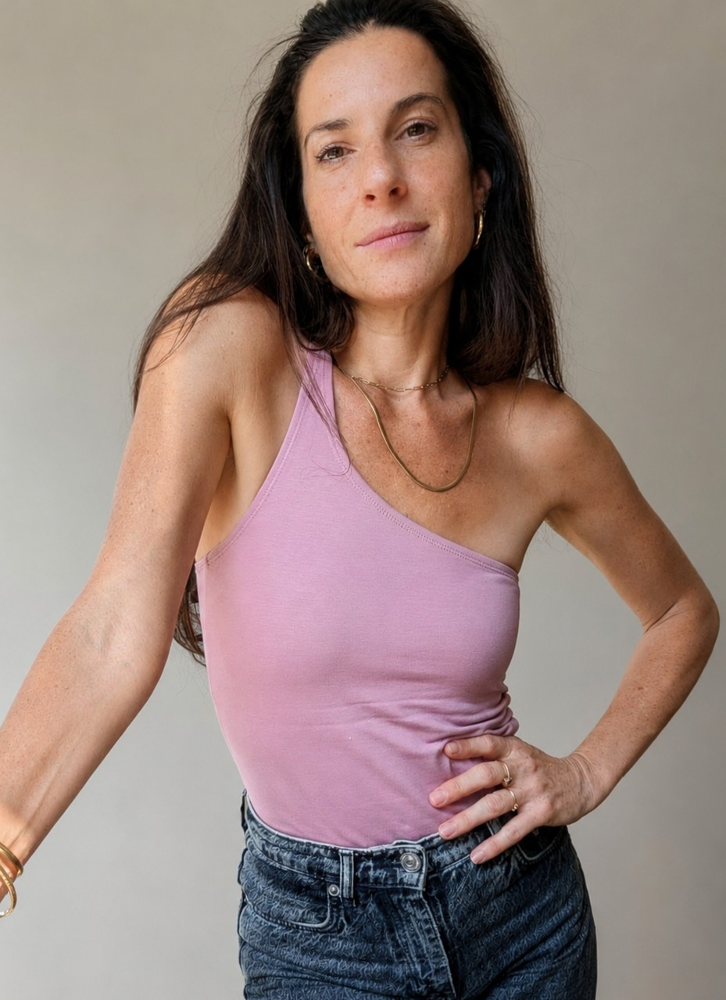

I am a scientist, theoretician, and designer who uses the rigorous tools of advanced engineering to map, challange, and amplify the human experience. Holding a Ph.D. in Mechanical Engineering, I have spent over a decade tracking instability regimes, from managing a university dynamic laboratory to engineering bio-hybrid intelligence loops as an intern in the DLX Design Lab in Tokyo. Today, my practice bridges hard science and deeply human-centered design. I treat algorithms, non-linear mathematics, and biological networks not just as technical tools, but as critical materials to decode human behavior.
I build physical pipelines, interactive interfaces, and installations that intercept the invisible systemic frameworks constraining us. My work exists to reveal the raw friction of how we connect, feel, and survive inside algorithmic and institutional conditions.
Operational chronology
Hover node to inspect2004 — 2007
Air Force Simulator Instructor
Israeli Air Force
2007 — 2011
Mechanical Engineering B.Sc.
Ben-Gurion University
2011 — 2017
Ph.D. Mechanical Engineering
Ben-Gurion University · highest honors
2020 — 2024
Postdoc & Head of Research Lab
Tel Aviv University
2024 — 2026
M.Des. Industrial Design
Bezalel Academy
2025
DLX Design Lab Internship · Living Technologies
University of Tokyo
Present
Human Experience · Independent Practice
Research · Physical pipelines · interactive interfaces · installations
01 / Bio-Hybrid Intelligence & Social Topologies
A fictional parenting-training service based on a living neural proxy. It exposes the paradox of modern parenting: the attempt to prevent harm before it happens, while the child remains biological, nonlinear, and unknowable.
The project synthesizes neuroscience, developmental psychology, and neuromorphic computing to decode the proxy as a stage-specific model of the child’s brain. Future parents rehearse conflicts, receive feedback, and see how repeated responses accumulate into developmental risk. In the installation, visitors bond with a live proxy through facial mimicry and touch, then enter a conflict scenario.

Organoids Dialogue
A living neural communication system that asks whether two brain organoids can begin to speak. Moving beyond simple correlation, the project reveals neural interaction as a layered process of noise reduction, synchrony, and temporary gating, attempting to decode the structure of emergent, directed dialogue.
A particle simulation of dating-app culture, revealing the asymmetry, reward loops, and emotional fatigue behind algorithmic intimacy. It translates raw emotional experience into a probabilistic field, exposing how modern intimacy becomes strategy and exhaustion without removing the discomfort of the subject.
02 / Immersive Architecture & Behavioral Criticism
A speculative certification clinic where emotional neutrality becomes measurable, trainable, and printable. The system enters the contradiction between human feeling and institutional efficiency, revealing how emotional life is converted into operational risk and exposing emotional surveillance as future labor infrastructure.
An installation where the visitor slowly disappears, exposing the fragile border between presence, perception, and social erasure. By using computer vision not for recognition but for erasure, the project reveals disappearance as a layered phenomenon: sensory, technological, psychological, and gendered. Done in collaboration with Carmi Dror.
A physical-digital model of decision-making, where sand, particles, branching paths, and distorted time expose uncertainty and regret. It reveals choice as constrained motion: a negotiation between intention, environment, and nonlinear consequences.
03 / Sensory Architecture & Cognition
A visual system for scent that refuses to simplify smell, making its hidden chemical-perceptual structure legible. Treating scent as a high-dimensional signal, the project builds chemical-perceptual fingerprints to expose unexpected proximities. Its uniqueness is the refusal to flatten human perception into labels, offering a way to view invisible complexity without pretending it is simple.
A system that treats visual experience as raw data, directly converting changing light and chromatic intensity into acoustic structure. It reveals light as a dynamic waveform where brightness, color balance, and rhythm become audible behavior, using signal conversion as a deep experiential bridge between the senses rather than a mere digital effect. Done in collaboration with Carmi Dror.
A coffee cup shaped by flow instability, turning passive cooling into internal circulation. The project applies fluid-dynamics thinking to an everyday object, asking how internal motion can preserve temperature rather than relying solely on insulation. By translating advanced instability physics into a simple product logic, it reveals that a familiar domestic object can behave as a designed flow field where geometry, vortices, and convection actively interact.
04 / Complex Dynamics & Physical Systems
A game about indirect control: the player shapes the field, but the system chooses the path. The project reveals pathfinding as a negotiation between intention, obstacle, and prediction, making algorithmic decision-making playful and visible without explaining it abstractly.
A drawn guide that turns shock-wave theory into a clear visual narrative. It translates shock reflections and Euler-equation logic into step-by-step visual explanation, revealing the narrative structure inside equations and treating scientific explanation as structural design.
A study of wind and waves as a coupled feedback system, where chaotic motion becomes measurable signal. Using high-frequency sensor data, the work extracted structure from noisy measurements, revealing the organized exchange of momentum and energy inside a stochastic wind-water interface.
A body of research developing analytical models to track how shock structures evolve across space and time. Shock patterns can appear abrupt and unstable, but this project combines theory, experiment, and automated visual analysis to decode their dynamic nonlinear systems and topological changes.